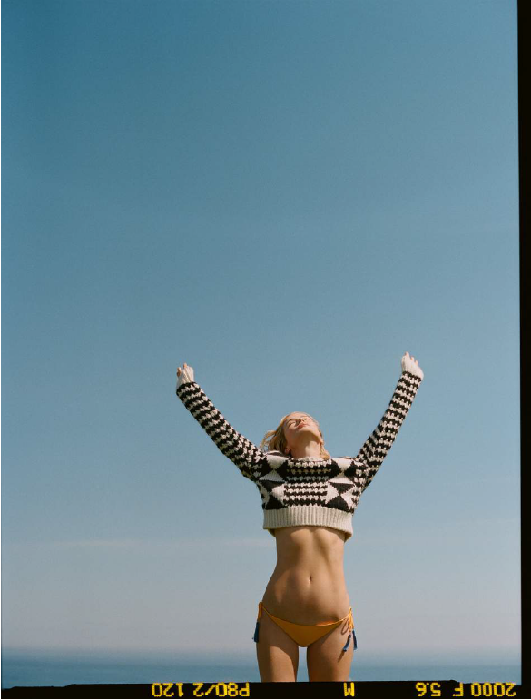

위엄마저 느껴지는 드넓은 바다가 펼쳐지는 곳. 인도네시아 발리의
알리라(Alila) 리조트의 선셋 바에서 나는 캐롤린 머피를 기다리고 있었다.
“저기 오네요!” 누군가가 상기된 어조로 말했고, 뒤돌아보니 정말 그녀다.
수줍은 미소를 짓곤 엄마 허리를 두 팔로 감싸고 있는 열한 살 배기 딸, 딜런과 함께.
촘촘한 니트 소재의 화이트 드레스, 부드럽게 쓸어올린 업두 헤어, 까무잡잡한 피부를
한층 아름답게 하는 골드 샴페인 톤의 메이크업까지.
내가 10대 시절 잡지에서 보아왔던 전성기 때의 화보 그리고
에스티 로더 리-뉴트리브 캠페인의 흑백사진에서 한 치의 빗나감 없는
클래식하고 엘리건트한 모습 그대로다.
한 명, 한 명, 단 한사람도 빠트리지 않고 눈을 마주치며 인사와 악수를 하고
안부를 묻고, 이야기를 나눈 뒤. 그녀가 말했다.
“자, 이제 저녁 식사를 할까요?”
그리고 디너 테이블. 운이 좋게도 내 자리는 캐롤린의 바로 옆자리.
흥분과 부담감이 동시에 들지 않을 수 없다.
뭘 물어볼까, 어떻게 해야 식사 중인 그녀를 불편하지 않게 할 수 있을까?
10분 뒤, 우리는 깔깔대며 그녀의 사랑스러운 딸 딜런에 대해 수다를 이어가고 있었다.
“그녀는 정말 사랑스러워요. 절 항상 웃게 만들죠. 아깐 제가 메이크업을 하고 있는데
글쎄, 메이크업 아티스트에게 자기도 스모키 아이를 해달라고 하더군요.
전 단번에 NO!라고 주의를 주었지만요.”
엄마가 하는 건 뭐든 따라하고 싶은 나이 아니겠냐고 내가 응수했다.
“하하. 그렇긴 하죠. 제 화장대에 있는 에스티 로더의 수많은 향수,
심지어 리-뉴트리브 크림까지 바르려 한다니까요.
지금 저와 발 사이즈가 같아 신발들은 이미 공동 소유가 된 지 오래죠.”
아이폰의‘헬로 키티’게임에 열중하고 있는 딜런을 사랑스럽게 바라보는 엄마, 캐롤린.
“전 딸아이에게 남을 배려하고, 행복을 찾는법을 알려주고 싶어요.
며칠 전엔 바닷가에 갔는데 금세 친구를 사귀었더라고요.
딜런 또래인 작은 인도네시아 여자아이였는데, 팔찌 같은 공예품을 팔고 있었죠.
다음날 딜런이 제게 그러더군요. 그 친구에게 뭔가를 꼭 해주고 싶다고.
우린 당장 까르푸에 가 노트와 연필, 책 등 필요한 것들을 구입해서 친구에게 건넸죠.
딸이 그런 예쁜 마음을 가져서, 친구를 미소짓게 만들 줄 알아서 참 행복해요.”
그래, 돌연 패션계를 떠나겠다 선언했던 그때,
그녀가 만들고자 했던 건 바로 이것이었으리라.

SHOP THE LOOK
Sweater Saint Laurent; bikini briefs Emma Pake